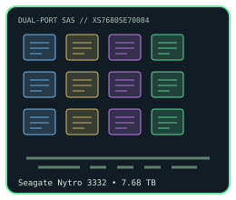

[ INDIVIDUAL COMPONENT // ENTERPRISE SAS SOLID-STATE DRIVE ]
Seagate Nytro 3332 7.68 TB
Model-specific catalog record for full manufacturer SKU XS7680SE70084. Rated endurance and performance below are manufacturer figures; configured host, firmware, workload and cooling affect results.

IDENTIFICATION: Match the complete SKU XS7680SE70084, capacity, encryption variant and label before installation. Standard (non-SED) configuration. This is a SAS product, not a SATA SSD.
Specifications
| Manufacturer / model | Seagate Nytro 3332 |
|---|---|
| Full SKU / option | XS7680SE70084 — standard. |
| Interface / protocol | Dual-port 12 Gb/s SAS (SAS-3); SAS protocol, not SATA or NVMe. |
| Capacity / form factor | 7.68 TB formatted capacity; 2.5-inch SFF, 15 mm height. |
| NAND / endurance class | Enterprise 3D eTLC NAND; Sequential Endurance (SE), rated 1 DWPD; 5-year JEDEC lifetime writes are capacity-specific. Manufacturer 5-year JEDEC lifetime write rating for this capacity: 14 PB. A lifetime rating is not a promise of field life. |
| Performance | Manual states up to 2,000 MB/s instantaneous transfer on dual-12-Gb/s-capable configurations. This is a family ceiling, not a per-drive benchmark; throughput and latency vary with SKU, queue depth, workload, link and host settings. |
| Power-loss protection / power | Manufacturer lists power-loss data protection and non-volatile write cache. The product manual gives input-rail and operating-power tables by model/capacity; use the matching manual table for enclosure thermal and power budgets. |
| Host compatibility | Requires a SAS HBA/controller and SAS-capable backplane/cabling; dual-port operation depends on host topology. A SATA-only host/controller cannot speak SAS. Check server/OEM firmware qualification, connector/caddy clearance for 15 mm height, sector format and supported capacities before deployment. |
Compatibility & service notes
- Use a SAS controller and backplane; don't infer support from physical similarity to a SATA 2.5-inch drive.
- For SED models, encryption provisioning, key management and sanitize behavior depend on the controller, operating system and security policy; retain required keys before service.
- Confirm dual-port cabling, 12 Gb/s link negotiation, capacity and firmware support with the server or storage-array vendor. OEM firmware may differ from retail or standard Seagate firmware.
- Record label, firmware, host/controller, date and SMART/health snapshot. Keep verified backups and periodic integrity checks.
Manufacturer datasheets & manual
- Seagate Nytro 3032 SAS SSD product datasheet, DS2047-2Seagate manufacturer datasheet for the Nytro 3332 SAS family; consult SKU and capacity rows for exact ratings.
- Seagate Nytro 3732 / 3532 / 3332 SAS SSD Product Manual, 100867109 Rev. BSeagate manufacturer product manual. Its model, endurance, power, interface and feature tables include the listed SKU series.
- Seagate official family support & documentation pageManufacturer support/downloads and family documentation landing page.